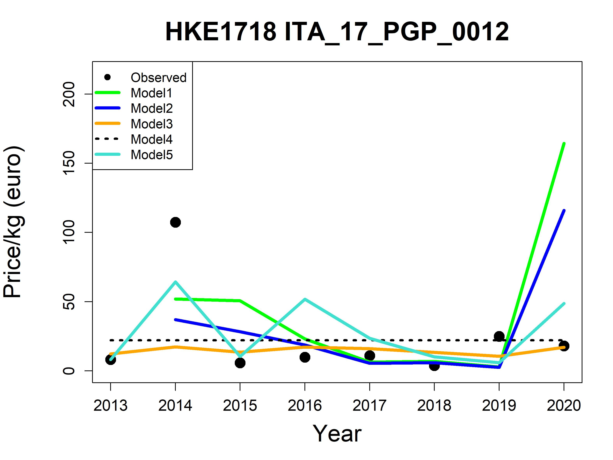
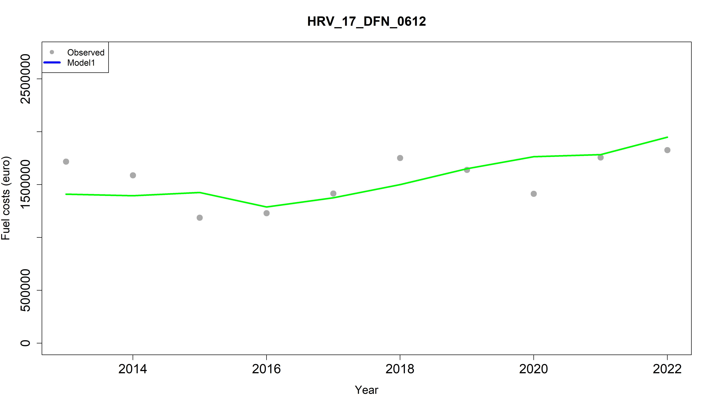
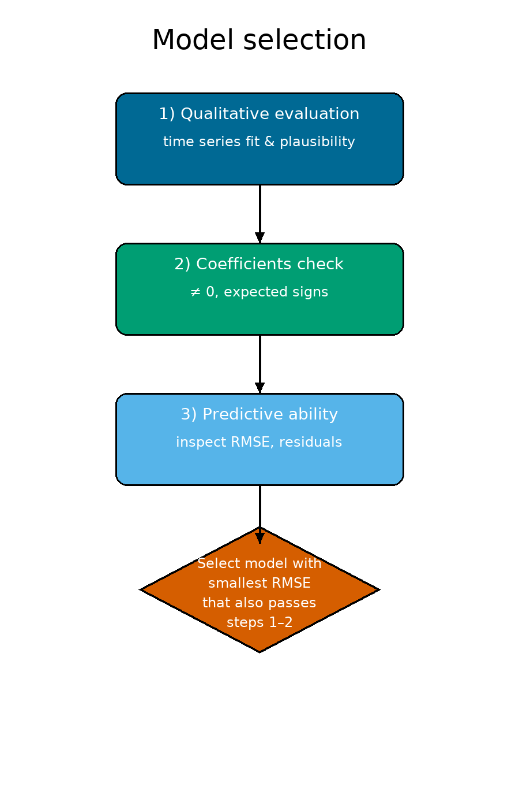

Compiled on 29/08/2025, 14:12SEAwise – Fish price & Variable costs
Introduction
This tutorial is based on the work carried out within SEAwise – Work Package 2: Social and economic effects of and on fishing.
Within SEAwise (seawiseproject.org), the socio-economic impacts of a set of management measures were investigated and quantified using bio-economic modelling. The project developed methodologies to strengthen the economic sub-models integrated into bio-economic models for Ecosystem-Based Fisheries Management (EBFM). This is crucial to ensure that the effects of management measures on the economic performance of fishing fleets are properly assessed and communicated to decision-makers, supporting more informed policy choices.
In particular, SEAwise improved the configuration of the economic component by adopting more flexible sub-models—moving beyond the common assumptions of fixed fuel costs and fixed fish prices—in order to produce more realistic fleet performance projections.
This document presents an example of how different equations for fish prices and variable costs can be fitted, using the case study of demersal fisheries in the Adriatic and Western Ionian Seas.
The tutorial is structured in two parts: the first focuses on fish price modelling, while the second addresses variable costs.
Adriatic and western Ionian Sea case study - background
Here is the map of the study area:

In SEAwise the main enhancement is represented by the disaggregation of the trawlers fleet segments by fishing activity at metier level (demersal: OTB_DEF, deep-water: OTB_DWS and mixed: OTB_MDD) in order to model possible effort re-allocation due to the implementation of the management measures (e.g. red shrimps catch limits) and/or to different fishing strategies as response to management (e.g. behavioural component).
The activity of the trawlers fleet segments in GSA 18 and 19 were split according to (Bitetto et al.(2022) using the FDI effort data in the among three metier: demersal species (OTB_DEF), deep-water species (OTB_DWS) and mixed species (OTB_MDD) (Table 1). In GSA 17 the activity was not split by metier because only OTB_DEF is applied.
Table 1- Fleet segment-metier combinations considered for the split of the fishing activity in the Adriatic and western Ionian Sea case study
| FS | Metier |
|---|---|
| GSA_18_DTS_0612 | OTB_DES |
| GSA_18_DTS_1218 | OTB_DES |
| OTB_DWS_MDD | |
| GSA_18_DTS_1840 | OTB_DES |
| OTB_DWS_MDD | |
| GSA_19_DTS_0612 | OTB_DES |
| GSA_19_DTS_1218 | OTB_DES |
| OTB_DWS_MDD | |
| GSA_19_DTS_1840 | OTB_DES |
| OTB_DWS_MDD |
The models were also enhanced for the other fleet segments (not split by metier) modelled in BEMTOOL, that are listed in Table 2.
Table 2- fleet segment enhanced not by metier. HRV stands for Croatia, SVN stands for Slovenia, ITA for Italy. DFN are fixed nets, DTS are vessels using as main gear trawl, PGP are polyvalent, HOK are vessels using hooks.
| Fleet_segments |
|---|
| HRV_17_DFN_0612 |
| HRV_17_DTS_0612 |
| HRV_17_DTS_1218 |
| HRV_17_DTS_1840 |
| ITA_17_DTS_0612 |
| ITA_17_DTS_1218 |
| ITA_17_DTS_1840 |
| ITA_17_PGP_0012 |
| ITA_18_DTS_0612 |
| ITA_18_HOK_1218 |
| ITA_18_PGP_0012 |
| ITA_19_HOK_0624 |
| ITA_19_PGP_0006 |
| ITA_19_PGP_0612 |
| ITA_19_PGP_1218 |
| SVN_17_DTS_1218 |
| ITA_17_TBB_VL1218 |
| ITA_17_TBB_VL1840 |
Fish price
Data structure
In this tutorial a dummy dataset is provided, to show the structure that your data needs to respect to run the fish price tutorial, available in SEAwise repository (task 2.2, CentralMed zip file). The revenues by species data are categorized as Variable “revenues.landing”, while the corresponding landing as “landing.weight”.
In the code the number of iterations refers to the k-fold used to derive the RMSE.
Fish price sub-models
For the Adriatic and western Ionian Sea case study, an exploration of different price models were carried out on European hake, red mullet, deep-water rose shrimp, giant red shrimp and blue and red shrimp in GSAs 18 and 19. Specifically, for the 9 combinations fleet segment-metier,5 different models among the ones reported in Deiverable 2.2 (Bitetto et al., 2023 – SEAwise Report on Carbon footprint, economic and social impacts of management strategies ) were explored and compared through the RMSE to select the best one.
The equations tested in this tutorial follow:
Model 1 assumes that fish price depends on relative changes in landings:
\[ p_{s,f,t} = p_{s,f,t-1}\left(1+\varepsilon_{s,f}\frac{L_{s,f,t}-L_{s,f,t-1}}{L_{s,f,t-1}}\right) \]
where \(\varepsilon_{s,f}\) is the elasticity coefficient of price with respect to landings.
Model 2 assumes that price as a function of the ratio between current landings and landings of the previous year, modified with respect to Salz et al., 2011 – FISHRENT; Bio-economic simulation and optimisation model:
\[ p_{s,f,t} = p_{s,f,t-1}\left(\frac{L_{s,f,t}}{L_{s,f,t-1}}\right)^{\varepsilon_{s,f}} \] In the original version of Salz et al., (2011) the ratio was against base year of the previous year.
Model 3 assumes that price as a function of the current landings.
\[ p_{s,f,t} = p_{s,f,t=last} \; e^{\varepsilon_{s,f} \, L_{s,f,t}} \] where \(p_{s,f,t=last}\) is the price in the last year (€/kg) and \(\varepsilon_{s,f}\) is the elasticity coefficient of price with respect to landings.
Model 4 assumes an average constant price, while Model 5 follows the price–landings elasticity formulation as described in Kraak et al. (2004) and implemented in the FLBEIA toolbox (FLBEIA price dynamics function documentation by Garcia et al. (2012)). The model increases prices when landings decline (and decreases them when landings rise), with the option to base calculations on total landings rather than fleet-specific landings. For this case study the price is assumed independent of age.
\[ p_{a,t,f,\text{season}} = p_{a,0,f,\text{season}} \left(\frac{L_{a,0,f,\text{season}}}{L_{a,t,f,\text{season}}}\right)^{\varepsilon_{a,f,\text{season}}} \]
Models fitting
The script price_sub_models_Adriatic_Ionian.r until line 333 fits the 5 models above described for each combination fleet segment-metier. The analysis is carried out by species and the results are automatically saved and stored in the directory FishPrice created by the script in the working directory.
For each model the RMSE (predictive capability) is also estimated, applying the k-fold approach (\(k=6\)), fitting the model on five-sixths of the dataset and validating on the remaining one-sixth:
\[ RMSE = \sqrt{\frac{SSE}{N} + MAE^2} \]
The RMSE and model coefficients were estimated over 30 iterations (the number can be modified on the top of the script) to mitigate bias caused by the limited length of the available time series. The final RMSE is calculated as the average across all iterations.
Once that the 5 models have been fit, a number of outcomes are automatically saved and available to select the best model for each fleet segment-metier:
- a summary of the elasticity coefficients and RMSE for each fleet segment-metier and for the 5 models;
| epsilon | FS | SPECIES | MODEL | RMSE |
|---|---|---|---|---|
| -0.21080 | HRV_17_DFN_0612 | HKE1718 | 1 | 0.3128020 |
| 0.02274 | HRV_17_DTS_0612 | HKE1718 | 1 | 0.1454150 |
| -0.20261 | HRV_17_DTS_1218 | HKE1718 | 1 | 0.2601498 |
| -0.04681 | HRV_17_DTS_1840 | HKE1718 | 1 | 0.4440918 |
| -0.87599 | ITA_17_DTS_0612 | HKE1718 | 1 | 71.2518653 |
| -0.46268 | ITA_17_DTS_1218 | HKE1718 | 1 | 0.5651157 |
- a summary of the observed and estimated prices for each year, fleet segment-metier and for the 5 models;
| Fleet_segment | Species | Year | Revenues | Landing | price | price_Mod1 | price_Mod2 | price_Mod3 | price_Mod4 | price_Mod5 |
|---|---|---|---|---|---|---|---|---|---|---|
| HRV_17_DFN_0612 | HKE1718 | 2013 | 361196.9 | 122000 | 2.960631 | NA | NA | NA | 3.429208 | 2.960631 |
| HKE1718 | 2014 | 418159.1 | 118000 | 3.543722 | 2.979778 | 2.976051 | NA | 3.429208 | 3.087963 | |
| HKE1718 | 2015 | 391624.0 | 114000 | 3.435298 | 3.567445 | 3.562817 | NA | 3.429208 | 3.225453 | |
| HKE1718 | 2016 | 578728.8 | 163000 | 3.550483 | 3.238269 | 3.249123 | NA | 3.429208 | 2.053254 | |
| HKE1718 | 2017 | 522136.9 | 139000 | 3.756381 | 3.667444 | 3.639711 | NA | 3.429208 | 2.510843 | |
| HKE1718 | 2018 | 677331.2 | 171000 | 3.961001 | 3.622264 | 3.637035 | NA | 3.429208 | 1.932672 |
- the models with the lower RMSE for each fleet segment-metier;
| epsilon | FS | SPECIES | MODEL | RMSE |
|---|---|---|---|---|
| -0.2108000 | HRV_17_DFN_0612 | HKE1718 | 1 | 0.3128020 |
| 0.0000002 | HRV_17_DTS_0612 | HKE1718 | 3 | 0.1198211 |
| 0.2040000 | HRV_17_DTS_1218 | HKE1718 | 5 | 0.1772077 |
| 0.0000002 | HRV_17_DTS_1840 | HKE1718 | 3 | 0.3036465 |
| 0.3570000 | ITA_17_DTS_0612 | HKE1718 | 5 | 20.8048173 |
| 0.6250000 | ITA_17_DTS_1218 | HKE1718 | 5 | 0.4627532 |
- the models with the lower RMSE for each fleet segment-metier;
| epsilon | FS | SPECIES | MODEL | RMSE |
|---|---|---|---|---|
| -0.2108000 | HRV_17_DFN_0612 | HKE1718 | 1 | 0.3128020 |
| 0.0000002 | HRV_17_DTS_0612 | HKE1718 | 3 | 0.1198211 |
| 0.2040000 | HRV_17_DTS_1218 | HKE1718 | 5 | 0.1772077 |
| 0.0000002 | HRV_17_DTS_1840 | HKE1718 | 3 | 0.3036465 |
| 0.3570000 | ITA_17_DTS_0612 | HKE1718 | 5 | 20.8048173 |
| 0.6250000 | ITA_17_DTS_1218 | HKE1718 | 5 | 0.4627532 |
- for each fleet segment-metier a plot reporting the observed values by year and the 5 estimated price by the 5 models is produced.

Variable costs
In this example is explored only model 1, based on the assumption that fuel and other variable costs depend on fishing days:
\[ \mathrm{FuC}_{f,t} = a_f \cdot \mathrm{AnnFD}_{f,t} \] where \({FuC}_{f,t}\) are the fuel costs (€),\(a_f\) is the fuel cost per fishing day, \({AnnFD}_{f,t}\) are the total annual fishing days.
The script VC_sub_models_Adriatic_Ionian.r fits the model above described for each combination fleet segment-metier. The analysis is carried out by fleet segment-metier and the results are automatically saved and stored in the directory FuelCosts created by the script in the working directory.
Also in this case the RMSE (predictive capability) is estimated, applying the k-fold approach (\(k=6\)), fitting the model on five-sixths of the dataset and validating on the remaining one-sixth.
Two main outcomes support the user in the definition of the enhanced sub-models and estimation of the corresponding coefficients by fleet segment-metier:
- a summary of the coefficient (variable cost in € per fishing day) and RMSE for each fleet segment-metier;
| coeff | FS | MODEL | points | RMSE |
|---|---|---|---|---|
| 31.81001 | HRV_17_DFN_0612 | 1 | 8 | 158241.9 |
| 90.79520 | HRV_17_DTS_0612 | 1 | 8 | 150236.4 |
| 181.11214 | HRV_17_DTS_1218 | 1 | 8 | 351994.0 |
| 484.95399 | HRV_17_DTS_1840 | 1 | 8 | 500209.1 |
| 130.39962 | ITA_17_DTS_0612 | 1 | 7 | 124337.9 |
| 355.28167 | ITA_17_DTS_1218 | 1 | 7 | 1181781.3 |
- for each fleet segment-metier a plot reporting the observed values by year and the estimated variable cost by the model is produced.

Suggestions for the model selection
Based on the results obtained in the Adriatic and western Ionian Sea case study, for a number of fleet segment the best fit for fish price is obtained through elasticity models rather than with constant price (model 4, with average of the years available). Nevertheless, in some cases the elasticity coefficients are very close to 0, highlighting the weak elasticity between the price and the quantity considered in the specific model explored. In many cases the differences among the fitted price through the different models are very similar, while in other cases the best model selected according to RMSE (probably compensating positive and negative residuals) does not seem to follow completely the price dynamic. For the variable costs the results show that the fishing day number drives markedly the costs.
However, the scripts provided can be easily generalized to include other functions.
For more equations, refer to Deliverable 2.2 (Bitetto et al., 2023 – SEAwise Report on Carbon footprint, economic and social impacts of management strategies ).

💡 Tips for model selection
- Do not rely only on RMSE: statistical fit may compensate opposite residuals and not always capture real price dynamics.
- Check the elasticity values: when coefficients are close to zero, constant-price models may be more robust.
- Prefer elasticity-based models when stronger relationships between landings and prices are evident.
- Balance statistical and interpretative criteria: the best model is both statistically sound and economically plausible.
- Focus on recent dynamics: models should reproduce recent price behaviour, since enhanced sub-models are used for future projections.